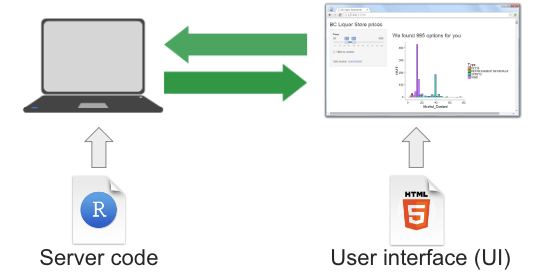

Introduction to Shiny
Last updated on 2024-01-08 | Edit this page
Estimated time: 35 minutes
OUTPUT
phantomjs has been installed to /home/runner/binOverview
Questions
- What is a Shiny App?
Objectives
- Explain what a Shiny app can do.
- Demonstrate the basic building blocks of a Shiny app.
Introduction to Shiny
As many of us work in R, we often want to make our work viewable to others in a broad audience. There are tools, such as Quarto that allow you to generate rich static reports that can be re-made every time your data updates (worth digging into another time!). They do not let other people play with the data and visualizations you are working on without their digging into the guts of R.
The answer is the creation of web applications. Shiny is a package that allows one to create web applications swiftly to explore and interact with data. At their bare minimum, they allow for some simple selection of subsets of data and re-visualizations. At their most complex… well, chekc out some of the submissions to the annual R Shiny Competition.
 In a nutshell, we write Shiny apps in R code. Those apps are then hosted on a server that is running an instance of a Shiny Server. Note, we will use a public Shiny server for this lesson, shinyapps.io. A user goes to the URL of a shiny site. The server processes the R code and delivers a user interface.
Discussion: Some example Shiny Sites
Here are a few Shiny websites. Take some time to explore them. What do you like about them? What do you not like about them? What possibilities do you see for your own work?
Posit’s shiny gallery.
Sea Surface Temperature from Buoys in the Gulf of Maine
Map of sites sampled by Maine DMR and the Rasher and Steneck labs for kelp and urchins.
Change in algal compsition from 1980-2014 at Appledore Island
Subtidal videos of kelp surves in Salem Sound
Creating a Shiny App
Let’s start by creating a new project called
shiny-geospatial. Within that project, create a folder
called data and download FIXME into that folder. Now, create a new
script. Call it app.R. Save it in the same director as your
.Rproj file.
Callout
While you can put a Shiny app into any file you like, once you use it
with a Shiny server, and you want to go to
http://myshinyserver.com/my_cool_app/ to run your app, the
server will only recognize one of two configurations.
The app is in a file called
app.Rin your top level directory. This file will have your entire app.The app is split between
ui.Randserver.R- which have those two pieces respectively.
Otherwise, nothing will load. You can create other R files with apps
in them to test out different things, but, they will not be recognized
by a server. This is not to say you won’t put pieces of your app in
different R files - we will talk about this later - but you will call
them within your app.R file using
source().
Note, you could have also created a Shiny project from Rstudio. But, this would initialize with a pre-built Shiny app in it. Which is fun to play with, but, can be confusing to then re-edit later.
The Anatomy of a Shiny App
A shiny app consists of four distinct parts. Here they all are, laid out. This app will actually run, although it will produce a blank app. Here’s the whole piece laid out. We will look at each one in turn.
R
# 1. Preamble
library(shiny)
# 2. Define a User Interface
ui <- fluidPage()
# 3. define a server
server <- function(input, output) {}
# 4. Call shinyApp() to run your app
shinyApp(ui = ui, server = server)
First, the preamble. This is code to run at the top
of the app (including loading the Shiny package) to prepare objects,
color palettes, or other things that you do not need dynamically created
or recreated later. You can even write this in another R script - say,
create_objects.R and then run them in the preamble like
so:
R
source("create_objects.R")
Second, the User Interface.
R
# 2. Define a User Interface
ui <- fluidPage()
Here, we create an object called ui for later use. We
are using the fluidPage() function. What does that do? The
helpfile tells us this is a function that creates a fluid page layout,
and we can add a title, theme, and more. What does that mean? Let’s find
out.
R
ui
We see that fluidPage() has generated some HTML code.
This is the core of Shiny - functions that generate code to be
interpreted by a web browser.
Note, because of the (), we can see that this is a
function. Shiny user interfaces are built by a series of nested
functions, each one generating more and more HTML code, nested by order
of how the functions are written.
Third we have the server:
R
# 3. define a server
server <- function(input, output) {}
This is, at the moment, just an empty function definition with two
arguments. What are those arguments? Where do they come from? Where are
they going? In Shiny, these are both defined by the environment. As we
will see input is a list modified by the ui.
And output is also a list that will be modified by the
server.
The final section is the call to Shiny. It runs the app
itself. So, you can call this to run the app. Note that the ui and
server are inputs to the arguments ui and
server. This means that, if you wanted, you could have
named them something else, but, the community seems to have coalesced
around using these object names.
R
# 4. Call shinyApp() to run your app
shinyApp(ui = ui, server = server)
Do you need to run this line of code every time? In Rstudio, no. As long as it sees this is a shiny app, there will be some options to run the app in your window
Which will also start a server. You can stop the server at any time by either hitting Ctrl-C in the console, or, clicking the Stop button in RStudio.